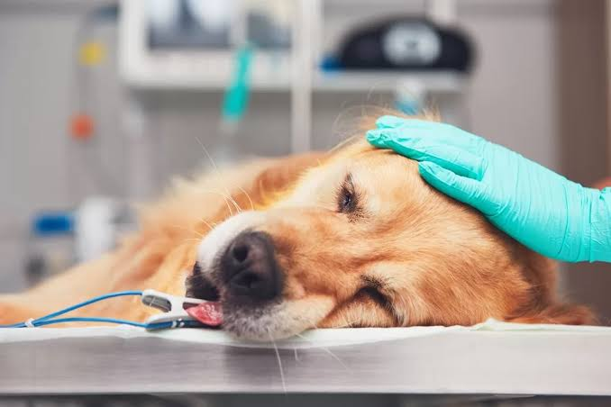
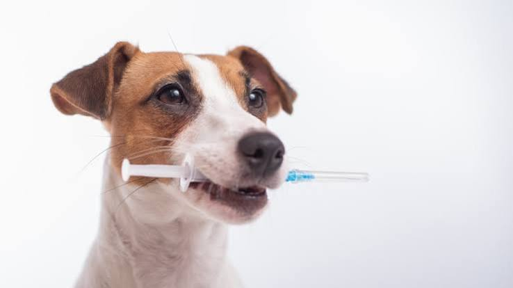
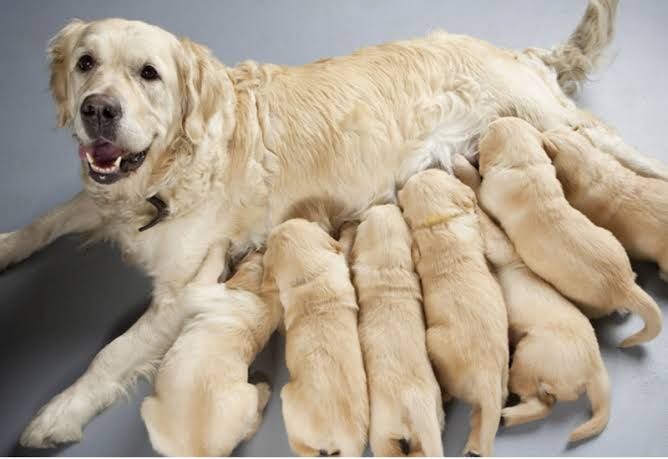
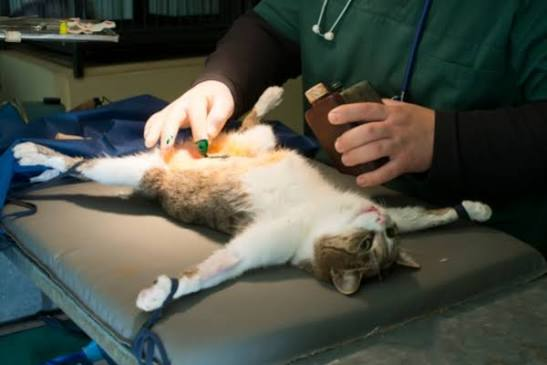
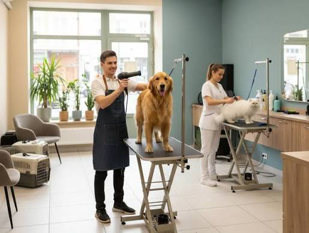
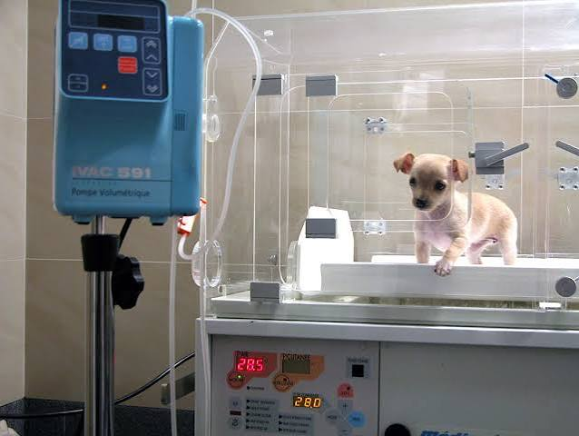
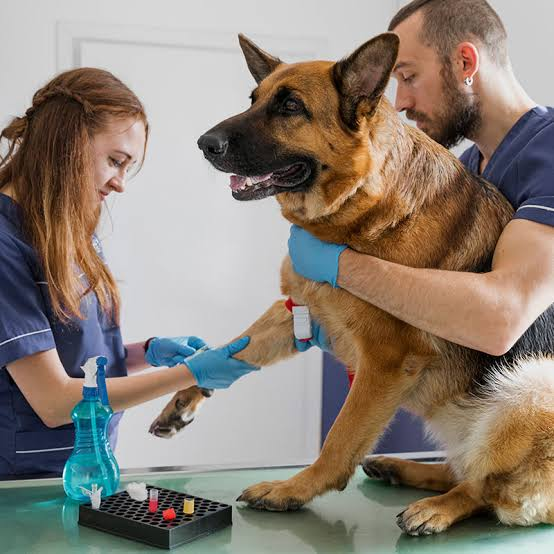

Cada servicio está diseñado para garantizar el bienestar, la salud y la felicidad de tu mascota.

🚨 Urgencias 24 horas. En Patas Felices estamos disponibles las 24 horas para atender a tu mascota cuando más lo necesita. 🐾❤️ Rápida, profesional y con mucho amor.
Agendar o Consultar
Brindamos atención veterinaria integral para cuidar la salud y el bienestar de tu mascota. Evaluamos su estado de salud y te orientamos con el tratamiento necesario. 🐶🐱💙
Agendar Cita
Protege a tu mascota con sus vacunas al día y previene enfermedades peligrosas. ¡Mantén su esquema al día! 🐾💉
Agendar Cita
Cuidamos la salud y calidad de vida de tu mascota con un procedimiento quirúrgico seguro, profesional y con el mejor cuidado. 🐾💙
Agendar Cita
Procedimientos quirúrgicos seguros y profesionales con equipos modernos para cuidar la salud de tu mascota. 🐾🩺
Agendar Cita
Consentimos a tu mascota con higiene, baño, corte de pelo, cuidado y mucho amor. 🐾✂️
Agendar Cita
Cuidado continuo y atención especializada supervisada por médicos para la pronta recuperación de tu mascota. 🐾🏥
Agendar Cita
Exámenes de diagnóstico confiables y rápidos para conocer y cuidar mejor la salud de tu compañero. 🐾🔬
Agendar CitaClínica Veterinaria comprometida con la salud, ética y el bienestar integral de perros, gatos y especies exóticas.
«Su bienestar, nuestra prioridad»
📞 Urgencias 24h: (300) 123-4567
💬 WhatsApp: +57 300 987 6543
✉️ Correo: contacto@patasfelicesvet.com
📍 Dirección: Av. Principal # 45-88
© 2026 Clínica Veterinaria Patas Felices. Todos los derechos reservados.
Dra. Andrea Castillo — Tarjeta Profesional Veterinaria No. 45892-COL